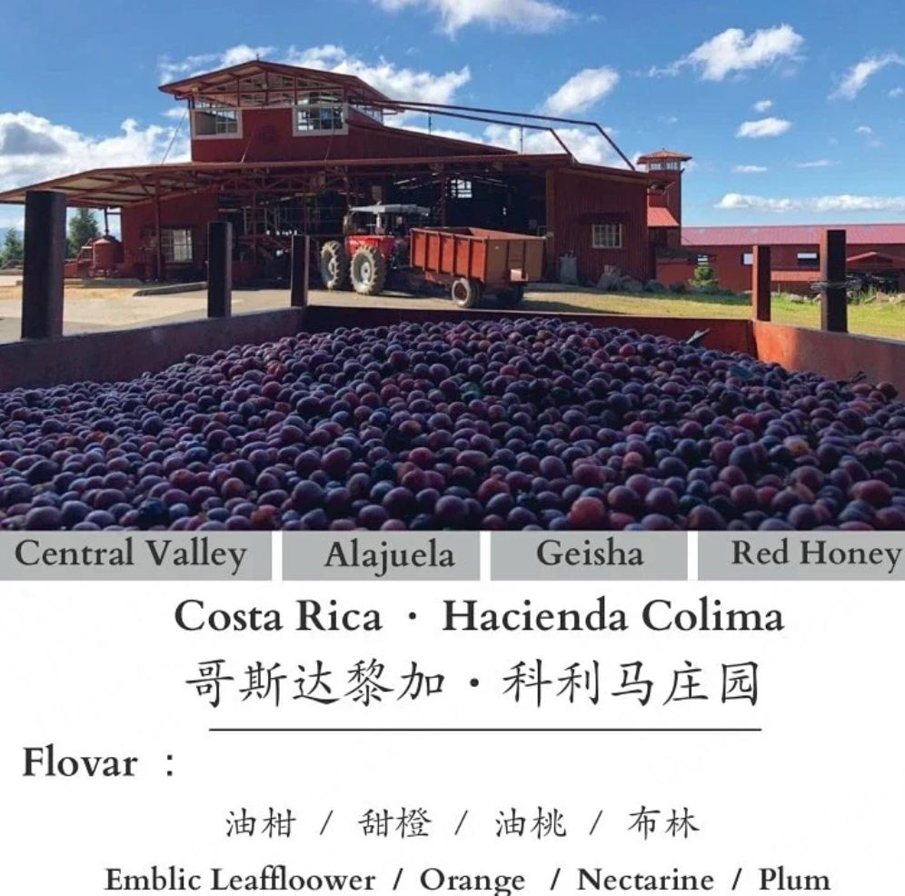
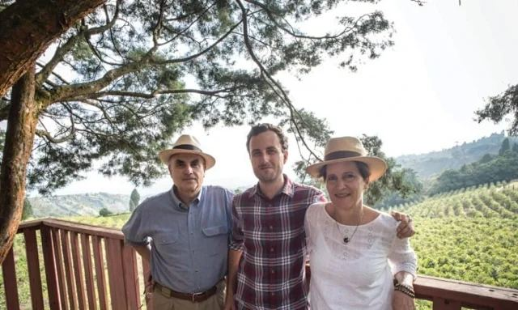
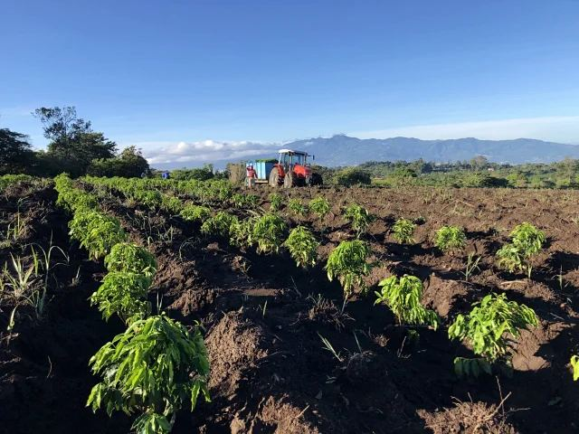
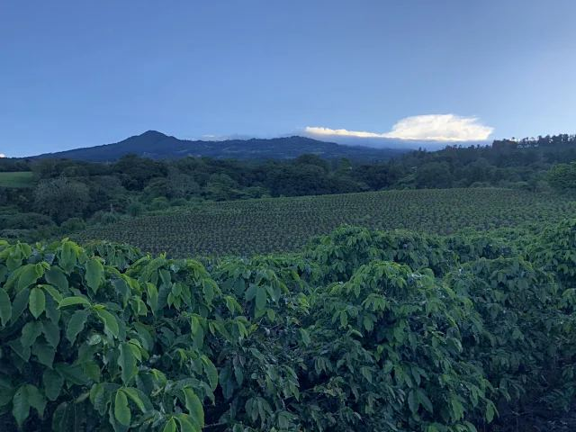
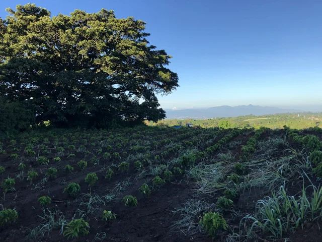
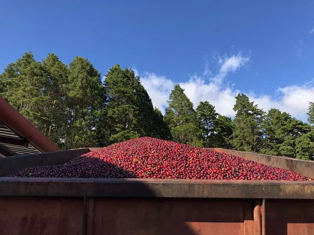
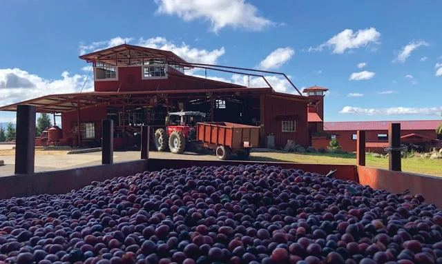

产地介绍
科利马位于哥斯达黎加中央谷地，隶属经营Volcán Azul的家族咖啡体系。本批为瑰夏品种、红蜜处理，种植地为山区的火山壤土。
科利马与家族咖啡事业
这段家族咖啡事业的源头可追溯至19世纪。Alejo C. Jiménez与Wilhelm Kahle分别在哥斯达黎加和墨西哥南部发展咖啡事业，后代延续了对品质的重视。庄园官网记载，科利马自19世纪中叶起便属于家族体系，如今由Alejo Castro经营。
除了生产咖啡，家族也通过购入天然雨林进行保护，将自然资源保育作为代际传承的一部分。科利马与蓝色火山属于同一家族体系。
查看完整资料相册 12 张







风味记录
供方风味记录雪梨
甜橙
红茶
干香柑橘、花香、红茶。
湿香柑橘、焦糖、香料。
啜吸雪梨、油柑与甜橙的清爽，轻微发酵红茶的气息，带出柔和红色花香，接着是杏脯与蔓越莓干。
降温变化中低温转向油桃、青芒果和油柑。
以上为风味联想，感受会随冲煮条件与个人经验变化。
冲煮参考
水温85℃
咖啡粉20g
总水量340g
粉水比1:17
研磨：C40 30格
滤杯：V60-01
用水：弱碱性过滤水
水温85℃ · 粉20g / 水340g（1 : 17）
总时间：2分30秒
断水次数：4次（分段注水，具体水量可按器具调整）
供方参考配方。研磨刻度仅对应所列机型，可按器具、流速和口味调整。
豆子资料
- 国家与产区
- 哥斯达黎加 · 中央谷地
- 庄园 / 来源节点
- 科利马庄园 · Hacienda Colima
- 生产者 / 处理者
- Alejo Castro
- 品种
- 瑰夏
- 土壤
- 火山壤土
- 采摘期
- 1—4月
- 处理方式
- 红蜜处理
- 烘焙度
- 浅焙
处理方式
红蜜处理属于蜜处理的一种：去除果皮后，保留一定果胶进行干燥。“蜜”指咖啡果胶，并不是加入蜂蜜。本批杯测呈现的是梨、柑橘、茶与花香的层次；风味名称用于描述感受，不代表配料。
烘焙记录
- 烘焙机
- 必德利6公斤级
- 烘焙量
- 1.5kg
- Agtron
- 豆色 72 / 粉色 98
以上为参考批次记录，当前烘焙安排以下单确认信息为准。
规格、包装与保存
100g¥169
227g¥339
454g¥649
454g采用227g×2包装。需要研磨时，请在下单时说明使用器具并确认研磨选项。
采用简洁密封袋，标签注明豆名与产地信息。收货后请密封、避光保存。当前批次、磨粉选项与发货安排，以订单确认信息为准。
同一顾客、同一收货地址的一单，优惠后商品实付满188元顺丰包邮，偏远地区除外。下单前确认商品金额及运费。